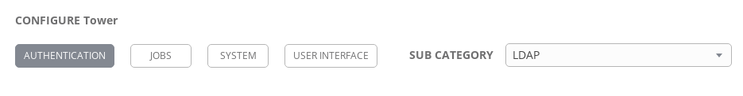
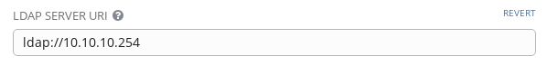
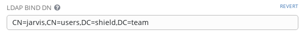
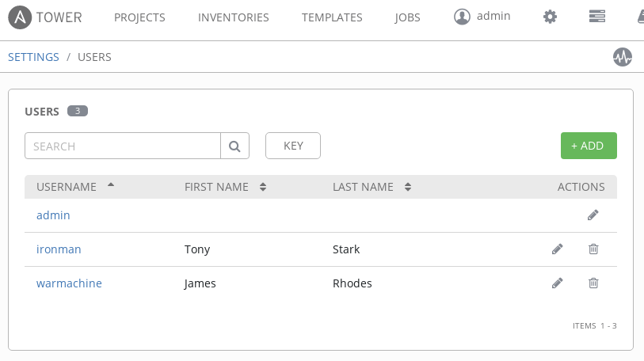

Getting Started with LDAP Authentication in Ansible Tower
Getting Started with LDAP Authentication in Ansible Tower
Next in the Getting Started series is covering the basics of configuring Red Hat Ansible Tower to allow users to log in with LDAP credentials. In this post, we'll explain a few troubleshooting tips to help narrow down problems and correct them. As long as you have a map of your LDAP tree/forest, this post should help get users logging in with their LDAP credentials.
CONFIGURATION SETTINGS
To configure your Ansible Tower for LDAP authentication, navigate to Settings (the gear icon) and to the "Configure Tower" section. The area within these configuration settings we're focusing on is "Authentication", and the sub category should be set to "LDAP".

The fields that will be the primary focus are:
- LDAP server URI
- Bind DN and password
- User/group searches
The other fields will allow you to refine your LDAP searches to reduce the resources used in production or map your organization.
The LDAP URI is simply the IP or hostname of your LDAP server
prepended with the protocol (ldap://).
\
The bind DN will be a user credential and password (followed by the group and domain) with access to read the LDAP structure.

REFINING USER SEARCH
With Ansible Tower able to connect to the LDAP server, refining the user search completes the configuration. The User Search entry will match the pattern specified by location and scope. In this case the user ID is the sAMAccountName value (instead of uid) since the search is against an Active Directory tree.


USER AND GROUP SEARCH
The User and Group searches are where the most troubleshooting might have to be done, depending on how complex your directory structure is. Use the ldapsearch tool from the openldap package to construct searches against the LDAP server. Begin with a basic search and dive incrementally to refine your searches.
ldapsearch -x -H ldap://10.10.10.254 -D "CN=jarvis,CN=Users,DC=shield,DC=team" -w 01Password! -b "cn=Users,dc=shield,dc=team"
This search is general and will list results in the location specified
(-b "cn=Users,dc=shield,dc=team") with the location
matching what you would use for your LDAP search scope against your
server.
The LDAP Require Group and LDAP Deny Group fields are for adding single entries to narrow your search scope by a single group. The LDAP User DN Template field will narrow down the scope to just the format you enter in the field. In the LDAP User Search field within the configuration page use:
- SCOPE_SUBTREE: to search recursively down the directory tree
- SCOPE_ONELEVEL: to specify a search one level down the tree only
- SCOPE_BASE: to only search the level specified in the base DN
Use the results returned from the LDAP search tool to choose the values to search by, for example: uid or sAMAccountName & group or groupOfNames. It's worth keeping in mind that LDAP User DN Template will supercede your LDAP User Search, so only use one or the other when setting it up.

For Windows/AD Admins
These steps set up a single-sign-on to Ansible Tower for logging in LDAP users. Configuration of Ansible Tower to authenticate against LDAP-connected hosts would be done in the Credentials section, and the same considerations will apply to authentication against Windows hosts that apply to Ansible.Considerations include prepping WinRM on the hosts to accept connections. Before preparing and running jobs against Windows hosts in an Active Directory, make sure to have the Credentials set up appropriately!
USER ATTRIBUTE MAP
Finally, it's important to dedicate some time when testing LDAP authentication to attribute user and organization mapping. The LDAP User Attribute Map is where the LDAP attributes are mapped to Ansible Tower attributes. Examples include first name, last name, email, etc. In this case the email attribute is mapping to the [userPrincipalName] in the Active Directory Server being used. The default is "mail" for most LDAP layouts, but you will need to know your structure in order to map accordingly.

The LDAP User Flags By Group field can be used to quickly narrow down mapping. For example, users belonging to the OU named "secret" are mapped to the superusers group in Ansible Tower in the example below:

More complex mapping will get equally more complex when mapping to teams and organizations in Ansible Tower. The example being used has a single organization with org admins defined as the OU named "secret" that was matched in User Flags By Group.
{
"Shield": {
"admins": [
"ou=secret,dc=shield,dc=team"
],
"remove_admins": false,
"remove_users": false,
"users": true
}
}
Users are assigned teams using the LDAP Team Map field. The simple LDAP database in the example below is mapping two groups to two respective teams within the same organization.
{
"secret": {
"organization": "Shield",
"users": "OU=secret,DC=shield,DC=team",
"remove": false
},
"avengers": {
"organization": "Shield",
"users": "OU=avengers,DC=shield,DC=team",
"remove": false
}
}
Mapping users and groups to Ansible Tower will vary in difficulty based on the LDAP database layout. Use the LDAP search command to refine your group queries and match them accordingly in Ansible Tower.
Recap
- To authenticate LDAP users logging into Ansible Tower, use: LDAP server URI, bind DN & password and user and group search
- Using LDAP User DN Template overrides the User Search
- Use LDAP Require Group and/or LDAP Deny Group to reduce the number of groups searched by Ansible Tower
- LDAP User attributes in Ansible Tower are defined in LDAP User Attribute Map
- Use LDAP User Flags By Group to set LDAP user flags in Ansible Tower
- Groups in LDAP are mapped to organizations or teams in LDAP Organization Map and LDAP Team Map, respectively